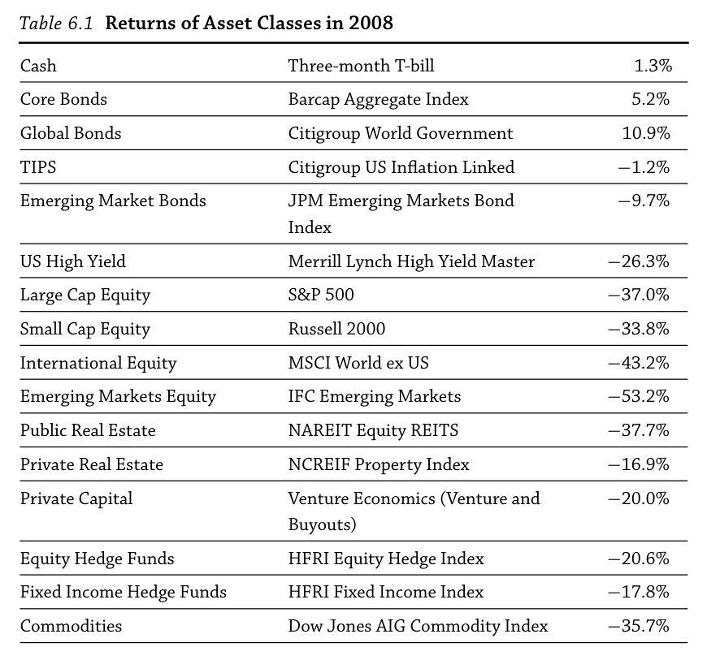
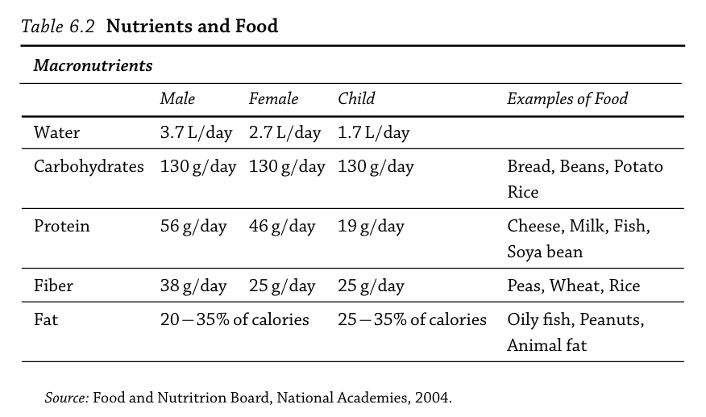
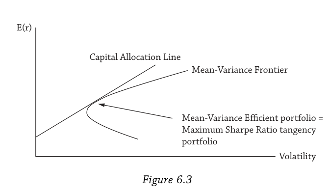

第六章：因子理论 学习笔记
1. 从一场危机说起
2008年，金融世界崩塌了。

美国大盘股跌了37%，这还不算最惨的——国际股票跌了43%，新兴市场股票直接腰斩，跌了53%。你可能会想：我早就分散化了，我持有的不只是股票，还有债券、房地产、对冲基金呢。然而高收益债跌了26%，房地产跌了37%，号称"与市场脱钩"、"全天候"的对冲基金也跌了20%，大宗商品跌了35%。几乎无一幸免。
唯一上涨的是什么？现金（T-bill +1.3%）和安全的政府债券（核心债券 +5.2%，全球政府债 +10.9%）。也就是说，只有最"无聊"的资产活了下来。
这引出了两个尖锐的问题：第一，为什么这么多看起来完全不同的资产类别——从纽约的写字楼到新兴市场的股票，从大宗商品到对冲基金——会在同一时间一起崩？第二，如果它们全都一起跌，分散化是不是一个骗局？
作者的回答是：分散化没有死。死掉的是一种幻觉——以为按资产类别标签分散就等于真正的分散化。表面上看，股票、债券、房地产、对冲基金是"不同"的东西，但掀开标签往里看，它们底层暴露的是相同的因子风险：经济衰退风险、波动率风险、流动性风险。2008年这些因子同时恶化，于是所有暴露于这些因子的资产一起下跌。这不是分散化的失败，恰恰是因子理论的胜利——它精确地预测了这种同步崩溃。
那么，什么是"因子"？它为什么能解释这一切？
2. 因子之于资产，就像营养素之于食物
为了建立直觉，作者用了一个精妙的类比。

Table 6.2列出了五种宏量营养素——水、碳水、蛋白质、纤维、脂肪——在不同人群中的推荐摄入量。我们吃米饭不是因为"米饭"这个标签有什么魔力，而是因为米饭含有碳水化合物和纤维。我们吃鱼是为了蛋白质和脂肪。每种食物都是多种营养素的捆绑包。如果你只盯着食物的名字而不看营养成分表，你可能以为自己吃得很均衡，但实际上摄入的营养素结构可能非常单一。
资产也是一样的道理。
你持有公司债，不是因为"公司债"这个名字好听，而是因为公司债这个"食物"里捆绑了利率风险、违约风险、股权风险、流动性风险等多种"营养素"。对冲基金、私募股权也是如此——它们都是不同因子风险的组合包。如果你只看资产类别标签来做分散化（"我买了股票又买了对冲基金，分散了吧？"），就像只看食物名字来搭配饮食一样不靠谱。
这个类比有三个核心相似点。
第一，重要的是因子，不是资产本身。 如果你能在实验室里直接合成纯净的营养素，你一样能健康地活着（虽然没有美食的乐趣）。同样，如果你能直接持有纯粹的因子组合，你就抓住了风险溢价的本质。投资时需要穿透资产标签看因子含量，就像吃东西要看营养标签而不是看包装。
第二，资产是因子的捆绑包。 有些资产几乎就是纯因子——水本身就是一种营养素，股票市场指数几乎就是市场因子本身。但大多数资产包含多种因子，就像大多数食物包含多种营养素。
第三，不同投资者需要不同的因子暴露。 男性、女性、儿童的营养需求不同。同样，一个在经济衰退中容易失业的上班族和一个在衰退中反而收入大增的破产律师，对GDP增长因子的最优暴露完全不同。前者的人力资本已经大量暴露于经济周期了，金融资产应该避开同方向的风险；后者则可以安心承受更多的经济增长因子风险。
但食物和资产之间有一个关键区别：营养素本质上是好东西，你吃它是为了获取能量和健康。因子风险则本质上是坏东西——每一种因子定义了一种不同的"坏时期"，可以是市场暴跌、经济衰退、高通胀、波动率飙升。投资者正是因为忍受了这些坏时期的损失，才能在好时期获得风险溢价作为补偿。
这就是因子理论的核心逻辑链：承担因子风险 → 在坏时期遭受损失 → 在好时期获得风险溢价。
理解了这个框架，下一步就是具体看最早、最基础的因子风险理论——CAPM。它只有一个因子：市场。
3. CAPM：一个光辉的失败
CAPM（资本资产定价模型）是1960年代由Treynor、Sharpe、Lintner、Mossin四人在Markowitz均值-方差理论基础上发展出来的。Sharpe和Markowitz因此获得了1990年诺贝尔经济学奖。Lintner和Mossin不幸在授奖前去世，Treynor的原始手稿从未正式发表，始终未获应有的认可。
作者对CAPM的评价很坦率：它在实证上是彻底失败的。 它预测资产风险溢价只取决于beta，且只有一个因子——市场组合。这两个预测都被数千篇实证研究否定了。但作者接着说，这个失败是"光辉的"（glorious），因为CAPM的基本直觉至今成立。75%的金融学教授推荐使用它，75%的CFO在资本预算决策中使用它。它大致正确，在大多数场景下够用，但在某些情况下会严重失灵。
CAPM的贡献在于一个革命性的认知转变：一个资产的风险不在于它自身的波动率，而在于它与其他资产、与整个市场的协同运动。 在CAPM之前，人们通常认为风险就是资产自身的波动率。CAPM说这不对——真正的风险度量是beta，即资产与市场组合的协方差。
下面通过六个教训来理解CAPM的全部内涵。
教训1：不要持有单个资产，持有因子
CAPM说世界上只有一个因子：市场组合——按市值加权持有所有股票，对应市场指数基金。
为什么？因为分散化。个股的回报可以分解为两部分：系统性风险（市场因子带来的）和特质风险（这只股票自身独有的）。系统性风险有风险溢价补偿——这是"营养"；特质风险没有风险溢价——这是"没营养的部分"。通过持有越来越多的股票，特质风险被分散掉了（一只股票出了问题，另一只股票可能表现好，部分抵消），最终只剩下无法分散掉的系统性风险。分散化到极致，你得到的就是市场组合。

Figure 6.3展示了这个过程的数学表达。回忆均值-方差前沿和资本配置线（CAL）：所有投资者持有无风险资产和均值-方差有效（MVE）组合的不同比例。CAPM做了一个极强的假设——所有投资者对所有资产的期望收益、波动率和相关性估计完全一致（同质预期）。如果大家的信息和判断都一样，那每个人计算出来的MVE组合也一样。既然每个人的最优风险组合都一样，而且这是能持有的最优组合，那在均衡中，这个MVE组合就成了市场组合。
**"均衡"**这个概念至关重要，值得展开说。均衡发生在投资者对资产的需求恰好等于供给的时候。做一个思想实验：如果所有人的MVE组合对某只股票AA的权重为零——没人想持有AA——那这不可能是均衡。因为AA的股票是发行在外的，总得有人持有。如果没人愿意持有，说明AA定价过高、预期收益太低。于是AA的价格下跌。CAPM假设AA的期望payoff不变，所以价格下跌意味着预期收益上升。AA的价格一直跌，直到预期收益足够高，让投资者愿意恰好持有等于AA流通股数的数量。此时供等于求，均衡达成。
均衡保证了市场因子的风险溢价不会消失。它反映的是整个经济体中所有投资者的风险偏好——这不是某个聪明的对冲基金能套利掉的，因为市场风险是系统性的、影响所有资产的。
教训2：每个投资者有自己最优的因子暴露
虽然所有人持有的风险资产组合都是同一个（市场组合），但持有的比例不同。在Figure 6.3的CAL线上，风险厌恶高的人靠近纵轴（多持无风险资产，少持市场组合），风险厌恶低的人在CAL线更右边的位置。就像不同人对碳水化合物的需求量不同一样。
教训3：平均投资者持有市场组合
CAL与均值-方差前沿的切点代表100%持有MVE组合（即市场组合）、不持有任何无风险资产的投资者。这就是"平均投资者"。严格地说，这个"平均"是按财富加权的。对应的风险厌恶系数就是整个市场的风险厌恶系数。比这个平均投资者更保守的人配置更多无风险资产，更激进的人配置更少。
教训4：因子风险溢价有经济学故事
在均衡中，CAL变成了资本市场线（CML）——因为在CAPM的强假设下每个投资者的CML都一样。CML给出了市场风险溢价的精确公式：
$E(r_m) - r_f = \bar{\gamma} \sigma_m^2$
$E(r_m) - r_f$ 是市场风险溢价，$\bar{\gamma}$ 是所有投资者按财富加权的平均风险厌恶系数，$\sigma_m$ 是市场波动率。
这个公式的直觉非常优美。市场波动率越高，风险溢价越高，股价当期下跌——2008年就是这样：波动率飙升的同时股价暴跌，但如果你在那个时点往前看，预期收益是非常高的（2009和2010年的实际回报确实很高）。平均投资者越厌恶风险，风险溢价也越高，这很直观——人们越怕，要求的补偿越多。
注意风险溢价与方差（$\sigma_m^2$）成正比，而不是标准差。这是因为CAPM投资者的效用函数就是均值-方差形式：喜欢期望收益，讨厌方差。市场组合在所有与它同期望收益的组合中方差最低——换句话说，市场有最高的夏普比率。它已经消除了所有特质风险，剩下的系统性风险必须被补偿。
教训5：风险就是因子暴露
现在从市场整体转到单个资产。单个资产的风险用它对因子的暴露来衡量——这就是著名的证券市场线（SML）：
$E(r_i) - r_f = \beta_i \left[ E(r_m) - r_f \right]$
其中 $\beta_i = \frac{\text{cov}(r_i, r_m)}{\text{var}(r_m)}$。Beta也可以写成 $\beta_i = \rho_{i,m} \cdot \frac{\sigma_i}{\sigma_m}$，其中 $\rho_{i,m}$ 是资产与市场的相关系数。
Beta衡量的本质是什么？是缺乏分散化潜力。第三章强调过，与组合相关性越低的资产，分散化效果越好——因为它更可能在组合表现差时有高回报。高beta资产与市场高度同向运动——市场涨它也涨，市场跌它也跌——对于已经持有分散化组合的投资者来说毫无吸引力，因为它和你已有的东西行为一模一样。所以投资者要求高预期收益才愿意持有这些高beta资产。
反过来，低beta资产在市场暴跌时往往能提供正回报，有巨大的分散化价值，投资者不需要太多补偿就愿意持有。如果beta足够低甚至为负，投资者甚至愿意付费持有——接受负的预期收益。黄金和政府债券就常被视为这类资产。2008年政府债券就是少数上涨的资产类别之一。
这里需要澄清一点："低beta"是指数值低，不是绝对值低。 Beta的范围从负到正是连续的：$\beta > 1$ 比市场波动更大；$\beta = 1$ 与市场同步；$0 < \beta < 1$ 同向但幅度小；$\beta = 0$ 与市场无关；$\beta < 0$ 与市场反向运动。"低beta → 低风险溢价"这条链走到极端就是"负beta → 负风险溢价"。
但你可能会问：理论上负beta资产是很好的"保险"，但现实中黄金价格低迷的时候有多少人真的持有？答案是很少。因为黄金不产生现金流（没有股息、没有利息），持有成本不低（存储、保险），而且在市场好的时候持有黄金意味着错过了其他资产的上涨（机会成本）。人们总是在市场已经出问题之后才去抢购黄金——那时候价格已经涨上去了。
这个现实恰恰说明了为什么负beta资产的对冲价值能够存在：正是因为大多数人不愿意在好时期忍受持有它的代价，它在危机时刻的保护功能才有价值。 如果所有人都在平时大量持有黄金，黄金价格会被推高，危机时的对冲效果也会被稀释。CAPM描述的是均衡中"应该发生的事"，而大多数投资者的短视和对机会成本的厌恶，恰恰是CAPM假设与现实之间的差距。
教训6：在"坏时期"能赚钱的资产，风险溢价低
这是教训5的另一面，换了一个叙述角度。在CAPM中，"坏时期"就是市场回报低（或为负）的时期。如果一个资产在市场跌的时候也跌，它就是高beta、高风险溢价。如果在市场跌的时候反而涨，它就是低beta、低风险溢价。
为什么好时期的收益不能抵消坏时期的损失？因为投资者是风险厌恶的——这是风险厌恶的定义：损失带来的痛苦大于同等金额收益带来的快乐。所以高beta资产必须提供高预期收益，投资者才愿意在均衡中持有它们。
把六个教训串起来，就是一条完整的逻辑链：分散化 → 市场组合是最优因子 → 每个人持有不同比例 → 风险溢价由均衡决定 → 风险用beta衡量 → beta高意味着坏时期亏得多，所以风险溢价高。
但CAPM只定义了一种"坏时期"——市场下跌。现实中坏时期有很多种：高通胀、经济衰退、波动率飙升、流动性枯竭……要捕捉这些不同维度的"坏"，我们需要多因子模型。
4. 从一个因子到多个因子：SDF与多因子模型
定价核：统一的"坏时期指数"
为了统一刻画多种坏时期，现代资产定价引入了一个强大的概念：随机折现因子（SDF），也叫定价核，记为 $m$。你可以把 $m$ 理解为一个"坏时期指数"——$m$ 值越高，时期越"坏"（你的边际效用越高，意味着你很缺钱，额外一块钱对你无比宝贵）。
这个 $m$ 有三个名字，每个名字来自不同的视角，但指的是同一个东西：
- 随机折现因子（SDF）：因为在定价公式 $P_i = E[m \times \text{payoff}_i]$ 中，$m$ 扮演"折现"的角色，但它不是一个固定的数，而是随状态变化的随机变量，所以叫"随机折现因子"。
- 定价核（Pricing Kernel）：借用统计学中"核"的概念——$m$ 作为加权函数，通过对payoff做加权平均来给所有资产定价。
- 状态价格密度（State Price Density）：从概率论的角度看，定价公式相当于在经 $m$ 调整过的概率测度下求期望。
CAPM其实是SDF的一个非常特殊的情况：$m$ 是市场回报的线性函数。
$m = a + b \times r_m \quad (b < 0)$
$b$ 为负，所以市场回报越低，$m$ 越大——市场下跌就是"坏时期"。线性的 $m$ 恰好会产生以市场beta为风险度量的SML公式。
多因子模型只是自然地把 $m$ 扩展为多个因子的函数：
$m = a + b_1 f_1 + b_2 f_2 + \cdots + b_K f_K$
每个因子 $f_k$ 定义一种不同的坏时期。而且SDF不必是线性的——现实世界是非线性的，后面章节的很多核心模型就采用非线性的定价核。SDF存在的条件也非常弱，只需要无套利（Harrison and Kreps, 1979），而CAPM则需要大量额外的强假设。
SDF如何给资产定价
为了理解SDF定价，先回顾传统方法。传统折现率模型说：
$P_i = \frac{E(\text{payoff}_i)}{1 + E(r_i)}$
这个公式是怎么来的？其实就是收益率定义的数学变形。收益率定义为 $1 + r_i = \text{payoff}_i / P_i$，即你付出价格 $P_i$，未来收到 $\text{payoff}_i$。两边取期望，移项，就得到了这个折现公式。其中折现率 $E(r_i)$ 由CAPM给出。
SDF方法提供了等价的、但更一般的表达：
$P_i = E\left[m \times \text{payoff}_i\right]$
两边除以 $P_i$，得到一个优雅的关系式：
$1 = E\left[m \times (1 + r_i)\right]$
对无风险资产，$r_i = r_f$ 是常数，协方差为零，所以 $E[m] = \frac{1}{1+r_f}$。
风险溢价公式的完整推导
这个推导揭示了SDF框架的核心洞察，值得完整走一遍。
从 $1 = E[m(1+r_i)]$ 出发，利用协方差的定义 $\text{cov}(X,Y) = E[XY] - E[X]E[Y]$ 展开：
$1 = E[m] \cdot (1 + E(r_i)) + \text{cov}(m, r_i)$
已知 $E[m] = \frac{1}{1+r_f}$，代入：
$1 = \frac{1 + E(r_i)}{1 + r_f} + \text{cov}(m, r_i)$
移项整理：
$\frac{-(E(r_i) - r_f)}{1 + r_f} = \text{cov}(m, r_i)$
$E(r_i) - r_f = -(1+r_f) \cdot \text{cov}(m, r_i)$
现在要把右边凑成 $\beta \times \lambda$ 的形式。乘以 $\frac{\text{var}(m)}{\text{var}(m)}$：
$E(r_i) - r_f = \frac{\text{cov}(r_i, m)}{\text{var}(m)} \times \left[-(1+r_f) \cdot \text{var}(m)\right]$
再用 $E[m] = \frac{1}{1+r_f}$，即 $(1+r_f) = \frac{1}{E[m]}$，最终得到：
$E(r_i) - r_f = \underbrace{\frac{\text{cov}(r_i, m)}{\text{var}(m)}}{\beta{i,m}} \times \underbrace{\left(-\frac{\text{var}(m)}{E(m)}\right)}_{\lambda_m}$
$\beta_{i,m}$ 衡量资产与坏时期的协动程度，$\lambda_m$ 是承担坏时期风险的单位价格。两者相乘就是这个资产应得的风险溢价。
这个公式完美地表达了教训6的直觉：资产在坏时期（$m$ 高的时候）回报越高，$\text{cov}(r_i, m)$ 越大，$\beta_{i,m}$ 越大，该资产越有价值——因为它在你最需要钱的时候给你钱——所以风险溢价越低。
多因子beta定价
当SDF包含多个因子时，单个资产的风险溢价自然推广为：
$E(r_i) = r_f + \beta_{i,1} E(f_1) + \beta_{i,2} E(f_2) + \cdots + \beta_{i,K} E(f_K)$
每个 $\beta_{i,k}$ 是资产 $i$ 对因子 $k$ 的暴露，$E(f_k)$ 是因子 $k$ 的风险溢价。比如用宏观因子：$f_1$ 是通胀，$f_2$ 是经济增长，那么坏时期就是高通胀、低增长、或两者兼有。用投资因子：$f_1$ 是市场组合，$f_2$ 是价值减成长策略（做多价值股、做空成长股），坏时期就是市场下跌、价值股跑输成长股、或两者兼有。
CAPM的六个教训在多因子世界中全部成立
作者专门做了一个对照表，说明从CAPM到多因子模型，六个教训的核心逻辑完全不变，只是从单因子推广到了多因子：
| CAPM（市场因子） | 多因子模型 | |
|---|---|---|
| 教训1 | 分散化有效。市场组合分散掉特质风险。 | 分散化有效。每个因子的可交易版本各自分散掉特质风险。 |
| 教训2 | 每个投资者有自己最优的市场暴露。 | 每个投资者有自己最优的各因子暴露。 |
| 教训3 | 平均投资者持有市场。 | 平均投资者持有市场。 |
| 教训4 | 市场因子在CAPM假设下于均衡中被定价。 | 在无套利或均衡条件下，每个因子都有风险溢价。 |
| 教训5 | 风险用CAPM beta衡量。 | 风险用多个因子beta衡量。 |
| 教训6 | 在市场下跌时能赚钱的资产有吸引力，风险溢价低。 | 在坏时期能赚钱的资产有吸引力，风险溢价低。 |
分散化仍然有效，只是每个因子的可交易版本各自分散掉特质风险。每个投资者仍然有最优的因子暴露，只是现在是多维的。风险仍然用beta衡量，只是变成了多个因子beta。坏时期仍然定义风险溢价，只是坏时期有了更丰富的定义。
什么算"坏时期"？
多因子模型的核心问题是：坏时期到底怎么定义？
对持有市场组合的平均投资者来说，坏时期就是额外一块钱变得非常宝贵的时候——边际效用高的时候。从这个角度看，SDF就是代表性代理人的边际效用。
具体来说，坏时期可以是：你刚失业、收入骤降，每多一块钱都珍贵；GDP增长低、整体消费萎缩；你的消费比邻居低（"追赶琼斯"效用函数）；你的消费比自己过去低（习惯效用函数）；波动率飙升（2008年的典型场景）；流动性枯竭。不同的坏时期定义对应不同的因子，每个因子都有自己的风险溢价。
5. CAPM的七个假设为什么逐一崩塌
理解了CAPM和多因子模型的理论框架之后，自然要问：CAPM到底错在哪里？前面说它是"光辉的失败"，光辉在于直觉正确，失败在于具体预测被数据否定。而它之所以在数据面前站不住脚，根源是它建立在七个非常强的假设之上。每放松一个假设，就会冒出CAPM无法解释的额外风险溢价。下面逐一展开。
假设1：投资者只有金融财富
CAPM假设投资者的全部财富就是金融资产组合。但本书第一部分反复强调过，现实中的投资者还有独特的收入流和负债。一个上班族最大的"资产"可能是他未来几十年的劳动收入——这就是人力资本。而人力资本的风险和经济周期密切相关：经济衰退时你可能失业，收入骤降；经济繁荣时收入稳定甚至增长。这意味着你的总财富（金融资产+人力资本）已经天然地暴露于经济增长这个因子，哪怕你的股票账户里什么都没有。
同样，负债通常是实际购买力计价的——你希望退休后维持生活水准，即使物价上涨。这使得通胀成了一个独立于市场回报的重要因子。
Jagannathan和Wang（1996）在一篇有影响力的论文中发现，当把劳动收入风险纳入CAPM后，模型的表现大幅改善。这说明人力资本本身就是一个被原始CAPM遗漏的重要因子。CAPM只看到了金融财富的冰山一角，忽略了水面下巨大的人力资本和负债。
假设2：投资者有均值-方差效用
CAPM的数学推导依赖于投资者的效用函数只关心期望收益和方差——收益分布的前两个矩。但正如第二章讨论的，更现实的效用函数对风险有不对称的处理：投资者对损失的厌恶远大于对同等金额收益的喜好。亏1万块的痛苦，远远超过赚1万块的快乐。
这种不对称意味着下行风险（downside risk）应该被单独定价——两只股票即使方差相同，如果一只更容易在市场暴跌时出现极端负回报，它应该有更高的风险溢价。Ang, Chen, and Xing（2006）的实证确认了这一点：高下行风险的股票确实有更高的收益。
更广泛地说，收益分布的高阶矩——偏度（skewness，分布的不对称性）和峰度（kurtosis，尾部的肥厚程度）——也携带风险溢价。这些高阶矩风险溢价有两种形式：第一种是个股自身的偏度/峰度属性（比如彩票型股票有极端正偏度，投资者愿意为这种"中大奖"的可能性付出溢价，导致这类股票预期收益反而低）；第二种是个股回报与市场组合偏度/峰度的协动关系——协偏度（co-skewness）和协峰度（co-kurtosis），即你的股票是否在市场尾部风险爆发时表现更差。Harvey and Siddique（2000）、Dittmar（2002）等研究证实了这些协高阶矩也被定价。
假设3：单期投资
CAPM假设投资者只做一期决策——买入、持有、到期卖出。这个假设本身不算致命：Merton（1971, 1973）已经把CAPM扩展到了动态的多期情形，称为跨期CAPM（Intertemporal CAPM, ICAPM）。在这个扩展中，CAPM在每个单期内仍然成立。
但从单期到多期带来了一个重大的实践含义：再平衡。本书第一部分已经说明，长期投资者的最优策略包含定期再平衡——当某类资产涨多了就卖出一些，跌多了就买入一些，维持目标配置比例。然而CAPM中的"平均投资者"持有的是市场组合——按市值加权的所有资产。市值加权组合的特点恰恰是不需要再平衡：某只股票涨了，它在市场组合中的权重自然就升了，无需人为调整。所以CAPM隐含了一个"买入并持有"的世界观，而现实中的长期投资者需要更积极的组合管理。
假设4：同质预期
CAPM假设所有投资者对所有资产的期望收益、波动率和相关性的估计完全一致。这是为了保证每个人计算出来的MVE组合一模一样，从而在均衡中MVE组合等于市场组合。
现实中人们的信念显然天差地别——有人看多有人看空，有人认为某只股票波动率高有人认为低。但单独来看，放松这个假设并不致命。Williams（1977）证明了一个修正版的CAPM仍然成立，其中预期收益是所有投资者信念的加权平均。也就是说，即使大家意见不同，只要市场能汇总这些意见，CAPM的结构依然大致成立。
但这个假设和下面的假设5结合起来，就会产生严重的问题。
假设5：无税收、无交易成本
这个假设的放松会从多个方向瓦解CAPM。
税收方面： 税收直接影响预期收益——同样的税前收益，在不同税率下给投资者带来的税后收益不同。不同类型的收入（股息、资本利得、利息）税率往往不同，这扭曲了投资者的偏好和资产定价。税收本身可以被视为一个系统性因子（第12章详述）。
交易成本方面： 不同证券的流动性差异巨大。交易频繁、市场深厚的大盘股交易成本很低；而小盘股、某些债券、私募资产的交易成本可能非常高。投资者需要额外的补偿来持有这些流动性差的资产——这就是流动性溢价（第13章详述）。我们应该预期，在流动性差、交易成本高的市场中，CAPM的偏差更为显著。实证也确实如此。
但最有趣的效应出现在交易摩擦与异质信念的交叉地带。 假设4说人们信念不同，假设5说市场有摩擦——当这两个假设同时放松，一个特别重要的现象出现了：做空受限。
在一个没有摩擦的世界里，看多的人买入，看空的人做空，价格反映所有人的综合信念。但现实中做空是困难且昂贵的（需要借券、支付费用、面临逼空风险），很多投资者甚至被监管禁止做空。当做空受限时，悲观者的观点无法反映在价格中——他们想做空但做不到，只能站在场外。结果是股票价格只反映了乐观者的信念，被系统性高估了。投资者信念本身变成了一个系统性因子。
这个洞察来自Miller（1977），值得强调的是它完全在理性框架内推导得出，不需要假设任何行为偏差。它说的不是投资者"不理性"，而是市场结构（做空受限）导致信息不能完整地反映在价格中。
假设6：投资者是价格接受者
CAPM假设每个投资者都很小，交易不会影响价格。但现实中，知情投资者（掌握了他人不知道的信息）的交易往往规模很大——正是因为他们有信息优势，所以会下重注。这些大额交易会移动价格，破坏了"价格接受者"的假设。
这和流动性问题密切相关：当大额交易移动价格时，意味着市场在这个交易规模下是不流动的。这又连接到了假设5中的交易成本和假设7中的信息不对称——知情交易者之所以能移动价格，正是因为他们拥有其他人没有的信息。
假设7：信息无成本且对所有人可得
这是CAPM最关键的假设之一，也是它通向"完美有效市场"的最后一块基石。
CAPM假设所有信息都是免费的，每个投资者都能获得相同的信息。在这样的世界里，没有人有信息优势，价格完美反映所有信息——这就是经典的有效市场假说（EMH）的基础。
但现实中，收集和处理信息的成本可能非常高。分析一家小公司的财务状况需要时间和专业知识；进行实地调研需要差旅费用；获取另类数据（卫星图像、信用卡消费数据）需要购买。而且信息的分布是极不均匀的——华尔街大型机构有庞大的分析师团队和数据资源，而普通散户几乎什么都没有。
信息本身在某些经济设定中可以被视为一个因子（Veldkamp, 2011）。CAPM适用于一个理想化的、信息完美的有效市场。而在信息成本高、信息不对称严重的市场角落——典型的就是小市值股和流动性差的市场——CAPM的失败最为显著。这些角落里信息传播慢、覆盖少，定价偏差更大、持续更久，额外的风险溢价也最明显。
正是信息不完美这一点，使得现代经济学家不再相信市场在CAPM的原始形式下是有效的。信息完美是一个自我矛盾的假设——如果所有信息都在价格里了，谁还会去收集信息？这个悖论直接引出了下一节的内容。
七个假设的总结
七个假设的放松汇聚到一个清晰的结论：CAPM之外存在大量的因子风险溢价。放松假设1带来了宏观因子（通胀、经济增长、劳动收入）；放松假设2带来了下行风险和高阶矩溢价；放松假设3引入了再平衡的考量；放松假设4和5的组合带来了做空受限下的信念因子和流动性溢价；放松假设6和7把我们引向了信息不对称和市场微观结构。
这些额外的风险溢价在流动性差、信息不透明的低效市场中最为突出——小市值股、新兴市场、非流动性的另类资产。这些恰恰是CAPM假设与现实差距最大的地方。
既然市场不完全有效，那它到底有多"不有效"？低效到什么程度？这些低效能被利用吗？
6. 有效市场的坍塌与重建
Grossman-Stiglitz悖论：完美有效是一个不可能的状态
今天的经济学家不再相信完美有效的市场。事实上，市场在纯粹形式下不可能有效。这个认知的转变来自Grossman和Stiglitz（1980）的一个精妙悖论。Stiglitz因这一系列工作（以及关于信息不对称的其他贡献）获得了2001年诺贝尔经济学奖。
悖论是这样的。假设市场完全有效——所有信息都已经反映在价格中。那么问题来了：既然价格已经包含了一切信息，谁还愿意花成本去收集和分析信息呢？雇佣分析师、购买数据、进行实地调研——这些都是有成本的。如果价格已经告诉了你一切，做这些研究就是纯粹浪费钱。
但如果没人去做研究、没人去收集信息，信息怎么可能反映在价格里？价格不会自动获取信息——信息必须通过知情交易者的交易行为才能被纳入价格。如果没人愿意成为知情交易者（因为无利可图），价格就不可能反映信息。
这是一个逻辑上的死循环。如果有效→没人收集信息→价格无法反映信息→不有效。如果不有效→有人收集信息获利→信息被纳入价格→变得有效。完美有效是一个自我否定的状态。
Grossman和Stiglitz的解决方案优雅而实际：市场是近似有效（near-efficient）的。具体来说，市场处于一个动态均衡中——主动管理者不断在市场的低效角落寻找定价偏差，他们的交易行为使信息逐步反映在价格中，使市场变得几乎有效。但不会变得完全有效，因为那样主动管理者就赚不到钱、会退出，市场又会变得不那么有效。
在这个均衡中，主动管理者赚取的超额收益恰好补偿了他们收集和处理信息所付出的成本。他们活动的"战场"——那些低效角落——正如我们在CAPM假设崩塌中分析的，集中在流动性差、信息传播慢、交易可能大幅移动价格的市场段。在这些角落里，信息成本高、信息不对称严重，定价偏差更大也更持久。
与APT和多因子模型的衔接
Ross（1976）的APT与Grossman-Stiglitz的近似有效市场天然契合。在APT的框架下，主动管理者和套利者把资产的预期收益推向与因子风险一致的均衡水平。但关键是：系统性因子风险是套利不掉的。你可以通过做功课发现一只被低估的股票并获利，但你无法消除整个经济体中的通胀风险或市场风险——这些是系统性的，所有投资者都必须面对。投资者为承担这些无法消除的系统性因子风险获得补偿，这就是因子风险溢价。
EMH检验仍然有意义
尽管我们知道市场不可能完全有效，检验有效市场假说（EMH）仍然有意义。原因在于EMH设定了一个非常高的基准：EMH的含义是，在投机性交易有成本的情况下，主动管理是一个输家的游戏——投资者无法系统性地跑赢市场。即使EMH不完美成立，这个基准仍然有力——如果你只是平均水平的投资者，简单地持有市场组合就已经能跑赢大多数主动管理者，仅仅因为你节省了高昂的交易成本和管理费。
在Grossman-Stiglitz的框架下，检验EMH可以帮助有才华的投资者识别低效角落在哪里——把主动管理的精力集中在那些信息成本高、流动性差、定价偏差大的市场段，而不是在高效的大盘蓝筹股市场中做无用功。
值得一提的是，EMH在过去几十年经历了大量修正，以弥补CAPM原始假设的缺陷——包括纳入不完美信息、交易成本、融资约束和代理问题。很多行为偏差也能产生类似于这些理性摩擦的效果。Ang, Goetzmann, and Schaefer（2011）总结了EMH检验的现状。对于我们的讨论来说，关键是偏离有效市场的现象有两种根本不同的解释来源。
两种解释：理性还是行为？
那些偏离CAPM预测的"异象"——某些资产赚了看起来"不应该"赚的高收益——到底是怎么来的？这个问题不仅是学术争论，对投资决策有直接影响：不同的来源意味着不同的持久性和可利用性。
理性解释：高收益是承受坏时期的补偿
理性解释认为，这些高收益不是"不应该"的——它们恰恰是应该的。投资者之所以能获得高收益，是因为他们在坏时期承受了损失，高收益是对这些损失的补偿。这就是定价核方法的核心逻辑。
关键在于正确定义"坏时期"——而且这些坏时期对你个人来说是否真的"坏"，取决于你自己的具体处境。大多数投资者觉得经济衰退是坏时期（因为可能失业），但一个破产律师在衰退中反而生意兴隆。大多数投资者讨厌高波动率（因为亏损加大），但少数能够承受短期大幅波动的投资者可以安然度过，在正常时期收割波动率风险溢价。
理性解释有几个重要的特征。首先，风险溢价不会消失，除非整个经济体制发生根本性变革。2008年金融危机看起来惊天动地，但它并不是体制变革——经济结构、投资者类型、风险偏好的基本格局没有根本改变。这类体制变革在历史上极其罕见。其次，由于风险溢价来源于深层次的经济结构，它是可规模化的——大型资产所有者可以大规模实施，不会因为规模太大而失效。典型的例子是波动率风险溢价。
行为解释：高收益来自投资者的系统性偏差
行为解释认为，高预期收益来自投资者对信息的过度反应或反应不足，或者信念更新过程中的系统性偏差。比如投资者可能对坏消息过度反应（恐慌性抛售导致价格跌过头），或对好趋势反应不足（价格没有及时反映利好信息，形成动量效应）。有些偏差来自投资者忽略了某些重要信息，或者对已有信息赋予了不合理的权重。
理论上，完全理性的投资者应该能发现这些定价偏差，带着足够的资本进场套利，消除这些因行为偏差导致的错误定价。如果是这样，行为性的超额收益应该会随时间消失——一旦聪明钱涌入，价格就回归合理水平。
但现实中，很多行为偏差引起的定价偏差持续存在。为什么？因为存在结构性进入壁垒（structural barriers to entry）——有些投资者即使发现了偏差也无法利用。比如监管要求某些机构投资者只能持有投资级以上的债券，或者只能买市值超过某个阈值的股票；比如很多养老基金和保险公司的投资范围受到严格限制；比如做空的成本和风险很高（需要借券、可能被逼空）。这些结构性障碍使得能够利用定价偏差的资本被挡在门外，偏差因此可以长期存在。
对于行动缓慢的大型资产所有者来说，一个行为解释的投资机会是否值得追逐，取决于它是否有结构性壁垒保护——如果没有壁垒，快钱会迅速涌入消除偏差，慢钱还没进场就已经没有了。典型的行为解释例子是动量效应（momentum）。
两者兼有
有些风险溢价的最佳解释是理性与行为的结合。价值/成长效应就是典型——价值股长期跑赢成长股，部分原因可能是价值股确实在经济衰退中表现更差（理性补偿），部分原因可能是投资者对成长股过度乐观、对价值股过度悲观（行为偏差）。
对投资者的实用启示
作者最后给出了一个非常务实的结论：投资者其实不需要纠结来源是理性还是行为。 无论来源是什么，真正重要的问题只有两个：
第一，你是否和平均投资者不同？ 如果你能承受别人不能承受的风险——无论是因为你的人力资本风险暴露不同（破产律师vs普通上班族），还是因为你的投资期限更长（主权基金vs短期交易者），还是因为你不受某些监管限制——你就有结构性的优势。在理性框架下，你可以承受别人不愿承受的因子风险；在行为框架下，你可以利用别人因为结构性约束而无法利用的定价偏差。
第二，这个收益来源是否会在未来持续？ 不管来源是理性补偿还是行为偏差，关键是预判它的持久性。理性来源通常更持久（只要经济结构不根本改变），行为来源的持久性取决于结构性壁垒是否继续存在。无论如何，一个即将消失的超额收益来源对你没有价值——你需要的是至少在你的投资期限内能够持续的来源。
这个关于因子投资的详细讨论将在第14章展开。
7. 回到2008：理论的验证
讲完了全部理论，回到开头的问题。2008年金融危机到底说明了什么？
答案是：危机恰恰验证了多因子模型。2008年是典型的"坏时期"——波动率极高、经济增长极低、政策不确定性巨大、多个市场流动性枯竭。这些因子风险同时爆发，所有暴露于这些因子的资产同步下跌。这不是分散化的失败，这是因子暴露的集中爆发。
分散化没有死。但金融危机揭示了一个教训：资产类别标签可以极具误导性。你以为持有"股票+公司债+房地产+对冲基金"就分散了，但掀开标签一看，它们底层暴露的全是同一组因子。就像你以为自己吃的是米饭、面条、面包、馒头四种"不同"的食物——其实它们的核心营养素都是碳水化合物。真正的分散化，需要在因子层面进行。
另外，均值-方差框架假设资产之间的相关性恒定，但现实中相关性在坏时期往往急剧上升。因子暴露本身也会随时间变化，导致时变的相关性。这更加说明：我们必须理解真正的因子驱动力，而不是依赖历史相关性来建立虚假的安全感。
8. 延伸讨论：宏观因子如何指导当下投资？
在学完因子理论之后，一个很实际的问题浮出水面：像GDP这样的宏观因子，我们只知道过去的值——GDP数据是季度发布的，还要延迟一两个月。等你拿到数据，市场早就反应过了。那宏观因子到底怎么用？
答案是：宏观因子的价值不在择时，而在配置和风控。 具体来说有四条思路。
第一，用高频代理变量。 GDP本身是低频滞后的，但有大量高频指标与GDP高度相关：每周的首次申请失业金人数、月度PMI（采购经理指数）、消费者信心指数、用电量、货运量等等。这些指标更新快，能帮你实时感知经济状态的变化方向。
第二，用可交易因子代替宏观因子。 这是本章暗示的一个重要转变。与其直接用GDP这种不可交易、滞后的宏观变量，不如用可交易的投资组合来捕捉相同的风险暴露——价值/成长策略、动量策略、低波动率策略，这些都是每天有价格的，你可以实时观察和交易。学术界从APT到Fama-French三因子模型的演进，本质上就是从"宏观因子不好用"走向"用可交易因子组合"。Fama-French的市场因子、规模因子（SMB）、价值因子（HML）都是可交易的多空组合，不存在时滞问题。
第三，因子理论的真正用途是战略配置而非战术择时。 你不需要预测下个季度GDP是多少。因子理论告诉你的是：你的组合结构性地暴露于哪些因子风险，这些暴露是否和你的风险承受能力匹配。比如你是房地产销售，劳动收入与经济周期高度相关——你的人力资本已经大量暴露于GDP增长因子了。那你的金融资产就不应该再重仓周期股，而应该配置一些在经济下行时表现好的资产。这个决策不需要预测GDP，只需要认识到你自己的因子暴露结构。
第四，事前风险管理而非事后反应。 因子框架最大的价值是让你在构建组合的时候就想清楚：如果波动率飙升怎样？如果经济衰退怎样？如果流动性枯竭怎样？你不是等坏事发生了再行动，而是提前确保你的因子暴露在你能承受的范围内。
战略配置（长期结构）与战术择时（短期预测）的区分，在后面的章节中会反复出现。
全章逻辑链
2008危机（现象：为什么一起崩？）→ 因子理论框架（营养素类比：因子才是本质）→ CAPM单因子（六个教训：分散化、beta、坏时期）→ SDF与多因子（理论推广：多种坏时期）→ CAPM为什么失败（七个假设逐一崩塌）→ 市场不完全有效（Grossman-Stiglitz悖论）→ 理性vs行为解释（两种溢价来源）→ 回到2008（验证理论）→ 宏观因子的实践应用（配置而非择时）